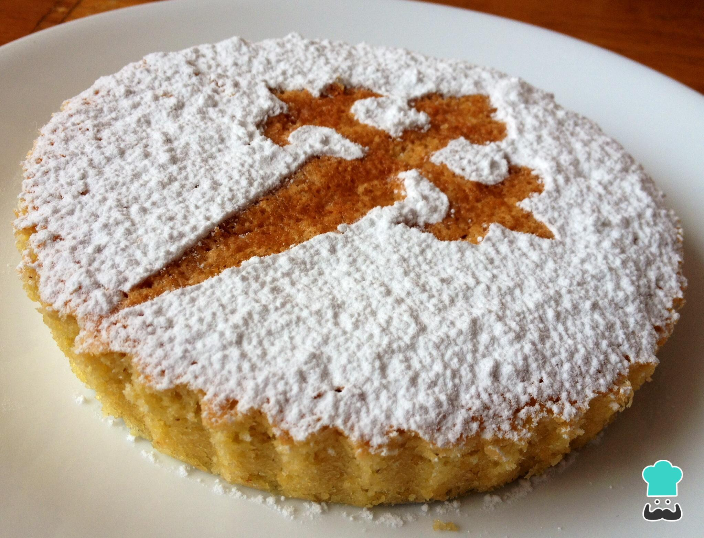
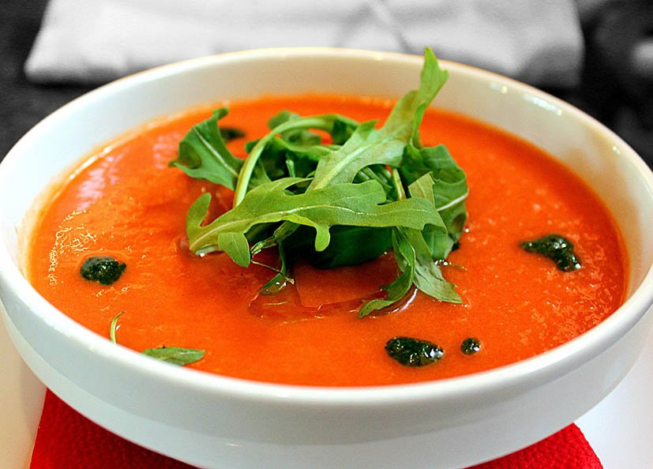

A paella valenciana é feita originalmente com arroz, pimentões, açafrão, frango, carne de porco, linguiça, frutos do mar, vagens, coelho, azeite, cebola, alho, dentre outros ingredientes e a paella marinera é uma versão que acrescenta peixes, lagosta e mexilhões à base de arroz.

A Tarta de Santiago é um bolo de amêndoas espanhol muito fácil de fazer. É naturalmente sem glúten, com um toque cítrico do limão e uma textura doce e macia. Perfeito para acompanhar o café ou como sobremesa.
Prato clássico das Astúrias feito com feijão branco grande e embutidos como chorizo e morcilla. Tem sabor forte, textura bem cremosa e é daqueles pratos pensados para dar bastante sustância.

Sopa fria da Andaluzia preparada com tomate, pepino, pimentão, alho, azeite e vinagre. É bem refrescante, fácil de beber e costuma ser servida tanto em copo quanto em tigela nos dias de calor.
A culinária espanhola é rica em sabores e tradições, variando de região para região. Cada prato reflete a história e os costumes locais, tornando a gastronomia do país uma parte essencial da sua cultura.